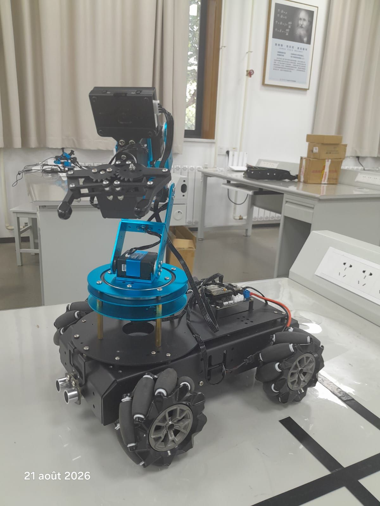
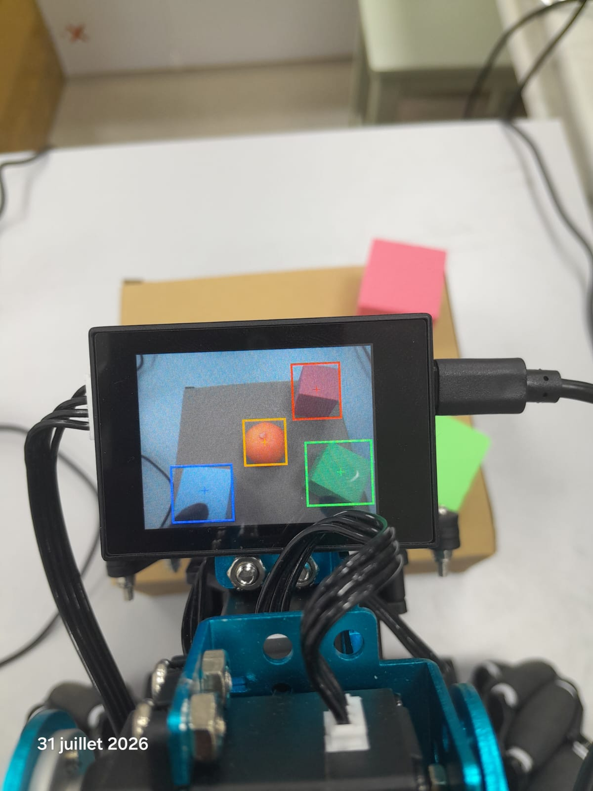
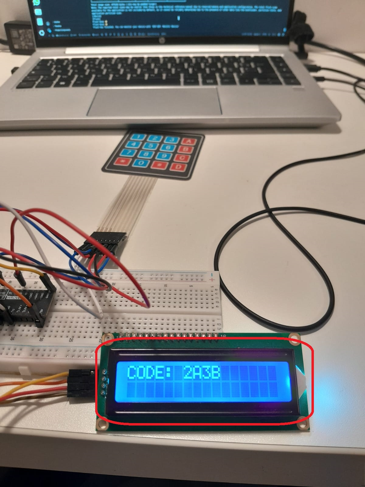
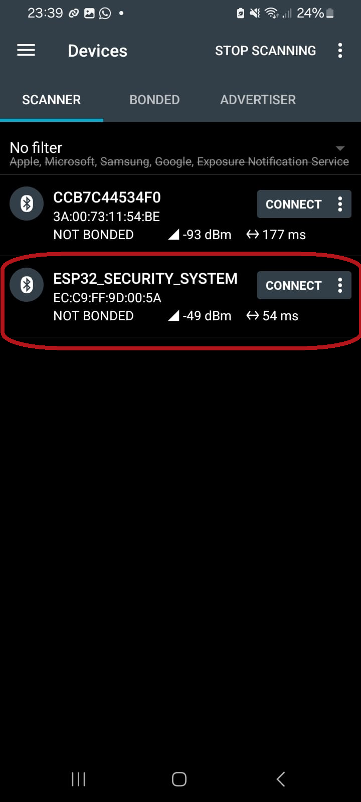
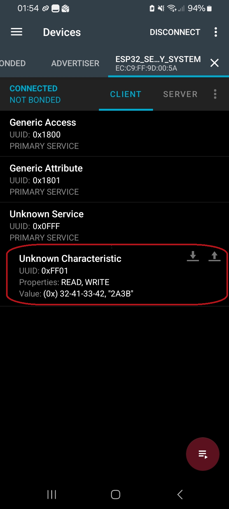
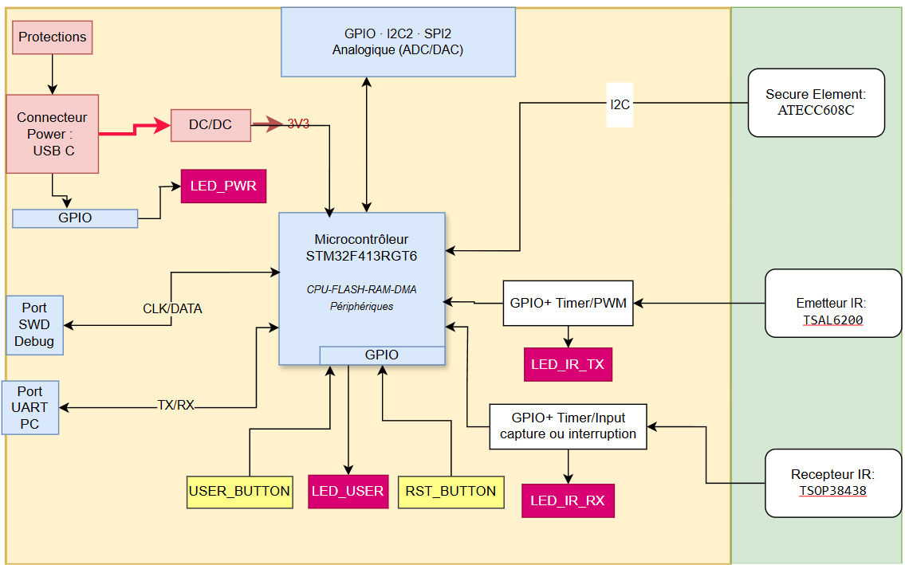
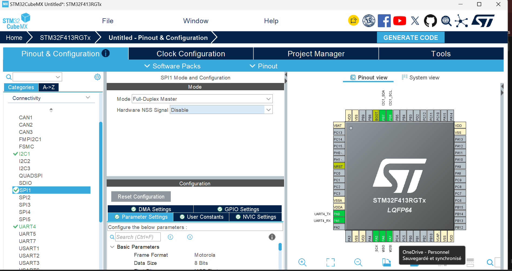

Kelly KASSIN
Élève-ingénieur en Électronique & Systèmes Embarqués, Polytech Nice Sophia
Je programme des microcontrôleurs et des SoC en C : interruptions, acquisition par ADC, pilotes de bus (I2C, SPI), communication sans fil (BLE), sécurité matérielle (TPM, Root of Trust), optimisation de la mémoire et mesure des performances. Je m’intéresse également à l’IA embarquée (régression, réseaux de neurones, PyTorch). Je cherche un stage de fin d’études de 6 mois à partir de février 2027, en logiciel embarqué.
- Langages : C, C++, Python, VHDL
- Cibles : STM32, ESP32, SoC FPGA
- Embarqué : FreeRTOS, I2C, BLE, WiFi
- Bas niveau : interruptions, registres mappés, machines à états, empreinte mémoire
- Validation : debug pas à pas, analyseur logique, testbench
- Outils : Git / GitHub, Vivado / Quartus, ESP-IDF, STM32CubeMX/SMT32CubeIDE, Kicad
Projets & expériences
Cinq contextes distincts : projet en cours, expérience professionnelle, projets académiques, projets personnels et travaux pratiques. Cliquez sur un projet ou une expérience pour afficher son contenu.
Expérience professionnelle
Stage Stagiaire en logiciel embarqué Xidian University, Xi’an · Avril – Août 2026
Mission : concevoir et mettre en œuvre un système de reconnaissance de culture et de cueillette de précision dans des contextes agricoles, basé sur un robot de cueillette mobile.
- Navigation autonome du robot, perception et détection d’objets avec ROS2, OpenCV et YOLO, en Python.
- Simulation sous Gazebo, puis déploiement sur le robot réel évoluant dans un milieu avec obstacles.
- Réalisation de la chaîne complète : navigation autonome, reconnaissance des fruits et légumes mûrs et cueillette.
Résultats : simulation fonctionnelle de la navigation, puis navigation autonome du robot réel dans un environnement avec obstacles, et chaîne complète de reconnaissance et de cueillette opérationnelle.


Projets académiques
Académique Filtrage numérique du signal — MATLAB MATLAB · Binôme avec Y. Ommi, ELSE 4A
Mission : débruiter un signal audio par un filtre passe-bas, en concevant et en comparant cinq familles de filtres numériques à partir des spécifications de gabarit (fp = 2 500 Hz, fsb = 4 000 Hz, Gpbmax = 40 dB, Gpbmin = 37 dB, Gsbmax = −55 dB), puis traiter un signal vocal enregistré par un filtre passe-bas idéal.
- Calcul des tolérances δ, ε et des gains KIIR / KFIR à partir des gains en dB, puis détermination de l’ordre et du type de chaque filtre.
- Chebyshev I (n = 11) et Chebyshev II (n = 11) : comparaison des oscillations en bande passante (type I) vs en bande d’arrêt (type II).
- Elliptique (n = 8) : ordre le plus faible des IIR pour un gabarit donné — le plus favorable du problème.
- Kaiser (FIR, n = 176) et Parks-McClellan (FIR, n = 75) : synthèse par fenêtrage et par méthode d’égalisation des ondulations, comparaison du retard de groupe et de la réponse impulsionnelle.
- Pour chaque filtre : tracé du gain en dB et linéaire, phase, retard de groupe, diagramme pôles-zéros, réponse impulsionnelle, filtrage du signal bruité et écoute comparée.
- Acquisition et traitement de la parole : enregistrement d’un signal vocal (Fs = 8 kHz, 5 s), ajout de bruit gaussien dans le domaine fréquentiel pour préserver l’information, puis filtrage par un filtre passe-bas idéal centré sur 0 Hz et reconstruction par transformée de Fourier inverse.
Résultats : le filtre elliptique offre le meilleur compromis (ordre le plus bas pour un gabarit identique) ; côté FIR, Parks-McClellan obtient le même gabarit avec un ordre bien plus faible que Kaiser. Le filtre passe-bas idéal appliqué dans le domaine fréquentiel permet de reconstruire le signal vocal en supprimant l’intégralité des composantes hors bande.
MATLABChebyshev I / IIElliptiqueKaiserParks-McClellanIIR / FIRFFT / IFFTTraitement du signalAcadémique Transmission IRDA asynchrone en VHDL MAX10 · Quartus · ModelSim
Mission : concevoir la couche physique d’une liaison IRDA en infrarouge — modulateur et démodulateur PPM (Pulse Position Modulation) pour la transmission série asynchrone de caractères (1 start, 8 data, parité paire, 2 stop) — puis assembler et tester la chaîne complète en boucle.
- Modulateur PPM : machine d’états ASM (T0/T1), compteurs T (16 cycles par bit, horloge 10 MHz) et I (bits du caractère), génération d’une impulsion de 3/16 de TB quand le bit transmis vaut ‘0’ (
TxdIR = carrier AND NOT Txd). - Démodulateur PPM : détection du front de start, mesure de la durée du signal sur 16 cycles d’horloge, comparaison du compteur C pour décider la valeur du bit reçu.
- Assemblage structurel modulateur + démodulateur et testbench VHDL émettant ‘A’ (0x41) puis ‘B’ (0x42) à 10 MHz.
- Synthèse et placement-routage Quartus sur MAX10 : 28 éléments logiques, 12 registres, 98 mW ; contraintes SDC (horloge 10 MHz, faux chemins sur entrées/sorties asynchrones).
Académique Application avec interface homme-machine — Jeu du pendu C · Libsx
Mission : concevoir une application avec une interface graphique permettant de jouer au « jeu du pendu ».
Résultats : un jeu fonctionnel avec une interface utilisateur graphique permettant de jouer en entrant les lettres depuis le clavier, de changer de dictionnaire de mots (français ou anglais) et de régler le niveau de difficulté.
CLibsxIHMProjets personnels
Personnel Système de sécurité par code d’accès : ESP32 et Raspberry Pi en BLE C · ESP-IDF · FreeRTOS · Phase 1 terminée
Mission : concevoir un contrôle d’accès par code pour la barrière d’un immeuble : le code saisi sur un keypad 4×4 s’affiche en temps réel sur un LCD, puis est transmis en Bluetooth Low Energy à un Raspberry Pi chargé de le vérifier dans une base de données.
- Pilote I2C et LCD HD44780 écrits sans bibliothèque d’écran : API
i2c_masterd’ESP-IDF, balayage du bus, mode 4 bits via un PCF8574, bascule du signal Enable et séquence d’initialisation gérées à la main. - Balayage du keypad matriciel dans une tâche FreeRTOS dédiée, avec anti-rebond.
- Serveur GATT BLE (NimBLE) avec service et caractéristique personnalisés.
Résultats : la première phase, côté ESP32, est réalisée : le code saisi au keypad s’affiche sur le LCD et peut être lu et écrit depuis un smartphone (nRF Connect). Prochaine étape : mutex sur l’accès au LCD, client BLE et base de données des codes sur le Raspberry Pi. Rapport d’avancement (PDF)



Personnel Firmware & application de surveillance vidéo sans fil sur ESP32 C++ · PlatformIO · GTK4
Mission : développer un firmware sur un microcontrôleur FREENOVE ESP32 WROVER pour piloter l’acquisition vidéo, la configuration bas niveau des périphériques (GPIO, PSRAM) et la transmission des flux vidéo via un serveur HTTP embarqué en WiFi, vers une application de surveillance développée en parallèle en C++, avec traitement multithread et intégration d’un modèle de détection d’objets (YOLO/ONNX).
Résultats : le microcontrôleur envoie les vidéos à l’application, qui les affiche en réalisant la détection d’objets et le dénombrement de personnes dans l’environnement filmé.
C++ESP32 WROVERPlatformIOGTK4WiFi / HTTPONNX RuntimeFFmpegYOLOProjet en cours
En cours Communication chiffrée Infra-Rouge (IR) avec racine de confiance matérielle (TPM) STM32 Nucleo · Projet de 5e année · En cours
Mission : concevoir from scratch un composant assurant une communication chiffrée en infrarouge selon le protocole NEC, avec un microcontrôleur STM32 Nucleo maître. L’architecture intègre un module TPM (ST33TPHF2XI2C) faisant office de coffre-fort matériel pour la gestion des clés, ainsi que des interfaces I2C, SPI, un port de debug SWD et un port UART.
- Communication infrarouge NEC : implémentation complète de la modulation et démodulation NEC (porteuse 38 kHz, encodage des bits par durée d’impulsion), en vue d’une transmission série chiffrée entre deux nœuds embarqués.
- Racine de confiance matérielle : intégration d’un TPM ST33TPHF2XI2C via I2C, gestion des clés et des opérations cryptographiques dans un coffre-fort matériel — notions de Root of Trust et de stockage sécurisé de secrets.
- Conception bas niveau : configuration des périphériques du STM32 (I2C, SPI, UART, SWD), mise au point du port de debug SWD pour la programmation et l’inspection en cours d’exécution.
- Chaîne complète : chiffrement des données applicatives, transmission IR, réception et vérification d’intégrité côté récepteur — mise en évidence des contraintes temps réel d’une liaison sans fil sécurisée.
Objectif : maîtriser la chaîne complète d’une communication embarquée sécurisée — depuis la racine de confiance matérielle jusqu’au protocole applicatif — en lien direct avec les enjeux du Secure Boot et de la cryptographie appliquée sur microcontrôleurs ARM.
CSTM32 NucleoTPM (ST33TPHF2XI2C)Root of TrustI2CSPIUARTSWDIR / NECCryptographie embarquée

Travaux pratiques
Cliquez sur un TP pour afficher son contenu. Les TP sont regroupés par matière.
IA Embarquée
TP Fondements du ML & régression linéaire Python · NumPy · scikit-learn
Mission : comprendre le pipeline complet d’entraînement supervisé — jeu d’entraînement, jeu de test, généralisation — et implémenter de zéro la régression linéaire avec descente de gradient en NumPy.
- Régression linéaire from scratch : modèle à un paramètre
ŷ = w·xpuis modèle completŷ = w·x + b, calcul du gradient par rapport àwetb, mise à jour itérative par descente de gradient (η = 0,005). - Métriques : implémentation de RMSE (Root Mean Square Error) et MAE (Mean Absolute Error), comparaison des erreurs train / test.
- Démonstration d’overfitting : ajustement de polynômes de degré croissant sur un jeu réduit, mise en évidence de la divergence entre erreur d’entraînement (↓) et erreur de test (↑) — illustration du compromis biais-variance.
TP Neurone artificiel, régression logistique & MLP PyTorch · MNIST · Breast Cancer
Mission : partir du neurone unique pour arriver à un réseau multi-couches entraîné par rétropropagation, évaluer rigoureusement les modèles de classification sur données réelles et déséquilibrées, puis basculer vers PyTorch.
- Neurone artificiel & régression logistique : implémentation des fonctions d’activation (Sigmoid, Tanh, ReLU), forward pass, perte BCE (Binary Cross-Entropy), gradients
dz = ŷ − y, mise à jour des poids. Application au jeu Breast Cancer (30 features, malignant vs benign). - Évaluation : calcul manuel de la matrice de confusion (TP, TN, FP, FN), puis Accuracy, Precision, Recall — interprétation critique du compromis rappel / précision sur un problème médical.
- XOR bruité dense (2 000 points) : mise en évidence qu’un neurone unique échoue (précision ≈ 51 % — une seule droite ne peut séparer 4 quadrants) ; implémentation d’un MLP
[2 → 4 → 1]entièrement manuel (forward et backward en NumPy, initialisation Xavier, backpropagation par règle de chaîne) qui atteint ≈ 99 % de précision. - Passage à PyTorch & MNIST : MLP profond (flatten → FC 128 → ReLU → Dropout 0,2 → FC 10), entraînement par
CrossEntropyLossetAdam, suivi des courbes de perte et d’exactitude (train / val), évaluation finale sur le jeu de test et matrice de confusion multi-classes (10 chiffres, ~98 % de précision).
Conception SoC FPGA
TP Passage piéton sur SoC FPGA ARM Cortex-A9 bicœur · DE10-Standard
Mission : application temps réel en C baremetal qui gère un feu tricolore et un témoin piéton, en deux modes : jour et nuit.
- Machine à états (variable énumérée, sorties de Mealy) pilotée par interruptions : timer0, boutons PIO, configuration du CPU et du GIC.
- Lecture d’un ADC (voie 0, registre mappé en mémoire) pour basculer entre jour et nuit, avec une hystérésis sur deux seuils pour éviter les changements d’état instables.
TP Signalisateur de chantier sur Nios II Quartus · Platform Designer
Mission : rampe de LED à vitesse réglable (100 à 900 ms), affichée sur 7 segments, avec drivers HAL et accès directs aux registres.
- Tâche périodique avec
alt_alarm_start(), routine d’interruption des boutons avecalt_ic_isr_register(). - Empreinte réduite : programme limité à 20 Ko, BSP allégé, taille des sections mesurée avec
nios2-elf-size.
TP Moteur pas à pas sur FPGA VHDL · Qsys · SignalTap
Mission : périphérique Avalon sur mesure — séquenceur (machine de Moore, modes mono et biphasé) et diviseur de fréquence réglable sur 6 bits à partir de l’horloge de 50 MHz.
Résultats : simulation avec un testbench, puis validation à l’analyseur logique.
VHDLAvalonSignalTapArchitectures des processeurs
TP Évaluation des performances d’une architecture sur ARM Cortex-A9 Vivado / Vitis · Zedboard (Xilinx)
Mission : évaluer les performances d’une architecture logicielle avec mémoires caches (L1 et L2), comparer une opération de copie selon les mémoires DDR et BRAM, et analyser les transactions du bus AXI 4.0.
Résultats : les caches accélèrent l’exécution d’un programme ; l’exécution d’une instruction est plus rapide sur la DDR que sur la BRAM. Pour améliorer une architecture logicielle, il est nécessaire d’inclure les caches.
Caches L1/L2DDR / BRAMAXI4VitisZedboardTP Développement de code avancé sur Zedboard Linux embarqué · cross-compilation
Mission : programmer et exécuter des applications en espace utilisateur et en espace noyau sur une plateforme embarquée, en manipulant les ressources matérielles et en développant des modules Linux.
Résultats : exécution, après cross-compilation, d’un code C sur la carte embarquée en espace utilisateur et en espace noyau.
Linux embarquéCCross-compilationVivado/VitisminicomCompétences
Langages
- Python
- C
- C++
- VHDL
- MATLAB
Microcontrôleurs
- STM32
- ESP32
Protocoles & communication
- I2C (pilote protocole)
- SPI
- UART
- BLE (GATT, NimBLE)
- WiFi / HTTP
Sécurité embarquée
- TPM (ST33TPHF2XI2C)
- Root of Trust
- Cryptographie appliquée
- SWD / debug bas niveau
FPGA & SoC
- Zedboard (Zynq-7000)
- Altera DE2
- DE10-Lite
- MAX10
Temps réel & navigation
- ROS
- FreeRTOS (tâches, ordonnancement)
- RTOS (en cours, fin janvier 2027)
Nano-ordinateurs
- Raspberry Pi
Vision & IA embarquée
- OpenCV
- YOLO / ONNX
- Régression linéaire / logistique
- MLP (PyTorch, NumPy)
- Métriques (précision, rappel)
Traitement du signal
- Filtres IIR / FIR
- Chebyshev, Elliptique
- Kaiser, Parks-McClellan
- FFT / analyse spectrale
Systèmes
- Linux embarqué
- Linux
- Windows
Outils & logiciels
- Vivado / Vitis
- Quartus / ModelSim
- Keil Vision
- STM32CubeMX
- ESP-IDF
- PlatformIO
- PyTorch
- scikit-learn
Soft skills & langues
Soft skills
- Esprit analytique
- Curiosité technique
- Rigueur et méthodologie
Langues
Parcours
Stage en logiciel embarqué, Xidian University (Xi’an, Chine)
Navigation autonome et cueillette de précision sur robot mobile. Voir le détail.
Diplôme d’ingénieur, Polytech Nice Sophia
Électronique & Systèmes Embarqués : SoC FPGA, systèmes à microprocesseurs, Linux embarqué, temps réel, C/C++, IA embarquée, sécurité embarquée.
Classes préparatoires MP, ESTEM (Maroc)
Filière mathématiques–physique, préparation aux concours d’entrée aux écoles d’ingénieurs.
Centres d’intérêt
Bricolage électronique
Réalisation de circuits à partir de composants récupérés et de projets personnels.
Sport d’équipe
Basketball.
Lecture
Culture scientifique et technique.